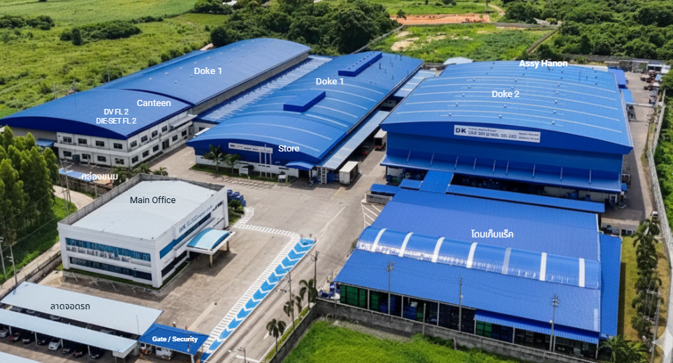

01 / 06
MANAGEMENT & COLLABORATION
Main Office
OPERATIONAL VALUE
KEY AREAS

รองรับโมเดล .glb/.gltf และรูปภาพจากเว็บที่อนุญาต CORS
คลิกเลือก · Shift+คลิกเลือกหลายชิ้น
Ctrl+ลาก ครอบเลือก · ลากแกนเพื่อปรับค่า
✂️ เลือกกำแพงแล้วคลิก 2
จุดเพื่อแยกช่วง
G ย้าย · R หมุน · S ปรับขนาด · F โฟกัส
Ctrl+Z ย้อนกลับ · Ctrl+Shift+Z
ทำซ้ำ
Ctrl+S บันทึก · Esc ยกเลิกการเลือก
ล้อเมาส์ซูม · คลิกขวาลากเลื่อนมุมมอง
คลิกอาคารเพื่อเปิดผังภายในและดูรายละเอียดแต่ละโซน
รูปทรงและสัดส่วนประมาณจากภาพอ้างอิง
กำลังสร้างแบบจำลองโรงงาน…